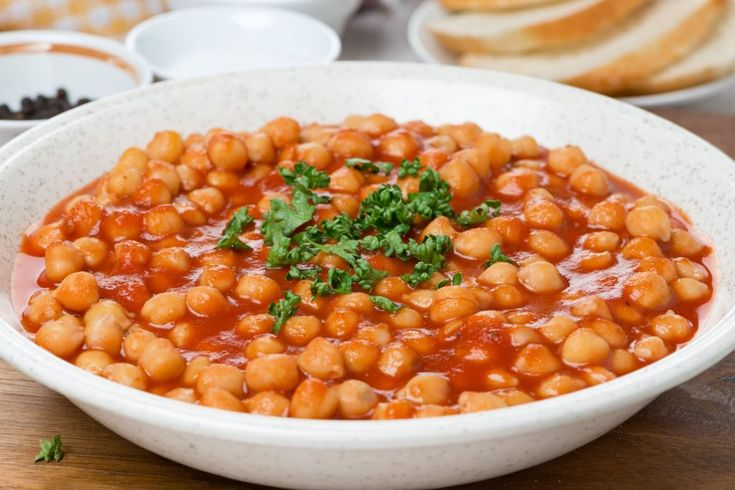

Rețete - Doza de Sănătate
 Menu Sănătate All Sănătate Anatomie și fiziologie Boli Medicamente Tratamente Remedii naturale All Remedii naturale Alte tratamente Îngrijirea corpului Îngrijirea părului Naturopatie Plante medicinale Terapii naturale Tratamente faciale Bunăstare All Bunăstare Exerciții și sport Frumusețe și îngrijire Minte sănătoasă Obiceiuri benefice Dietă All Dietă Diete pentru detoxifiere Diete sănătoase Nutriție Pierdere în greutate Rețete All Rețete Aperitive și feluri principale Desert Infuzii Rețete sănătoase Sucuri și smoothie Maternitate All Maternitate Copii Dragoste All Dragoste Relații Sex Stil de viață All Stil de viață Grădină și spații exterioare Sfaturi pentru locuință Știai că? Cine suntem • POLITICA DE CONFIDENȚIALITATE • Termeni și condiții de utilizare • LEGEA COOKIE-URILOR Sănătate Anatomie și fiziologie Boli Medicamente Tratamente Remedii naturale Alte tratamente Îngrijirea corpului Îngrijirea părului Naturopatie Plante medicinale Terapii naturale Tratamente faciale Bunăstare Exerciții și sport Frumusețe și îngrijire Minte sănătoasă Obiceiuri benefice Dietă Diete pentru detoxifiere Diete sănătoase Nutriție Pierdere în greutate Rețete Aperitive și feluri principale Desert Infuzii Rețete sănătoase Sucuri și smoothie Maternitate Copii Dragoste Relații Sex Stil de viață Grădină și spații exterioare Sfaturi pentru locuință Știai că?
Menu Sănătate All Sănătate Anatomie și fiziologie Boli Medicamente Tratamente Remedii naturale All Remedii naturale Alte tratamente Îngrijirea corpului Îngrijirea părului Naturopatie Plante medicinale Terapii naturale Tratamente faciale Bunăstare All Bunăstare Exerciții și sport Frumusețe și îngrijire Minte sănătoasă Obiceiuri benefice Dietă All Dietă Diete pentru detoxifiere Diete sănătoase Nutriție Pierdere în greutate Rețete All Rețete Aperitive și feluri principale Desert Infuzii Rețete sănătoase Sucuri și smoothie Maternitate All Maternitate Copii Dragoste All Dragoste Relații Sex Stil de viață All Stil de viață Grădină și spații exterioare Sfaturi pentru locuință Știai că? Cine suntem • POLITICA DE CONFIDENȚIALITATE • Termeni și condiții de utilizare • LEGEA COOKIE-URILOR Sănătate Anatomie și fiziologie Boli Medicamente Tratamente Remedii naturale Alte tratamente Îngrijirea corpului Îngrijirea părului Naturopatie Plante medicinale Terapii naturale Tratamente faciale Bunăstare Exerciții și sport Frumusețe și îngrijire Minte sănătoasă Obiceiuri benefice Dietă Diete pentru detoxifiere Diete sănătoase Nutriție Pierdere în greutate Rețete Aperitive și feluri principale Desert Infuzii Rețete sănătoase Sucuri și smoothie Maternitate Copii Dragoste Relații Sex Stil de viață Grădină și spații exterioare Sfaturi pentru locuință Știai că?
Rețete
Rețete sănătoase pentru dieta ta, cum să pregătești mese sănătoase.
Rețete sănătoase Încearcă un smoothie bowl la micul dejun!Ce este un smoothie bowl și de ce ar trebui să-l consumi la micul dejun? Un smoothie bowl este un…
Aperitive și feluri principale Descoperă o rețetă delicioasă de sos de iaurtOricât de greu de crezut ar părea, poți prepara acasă majoritatea sosurilor disponibile în supermarketuri. În articolul de azi, îți…
Rețete sănătoase Supă cremă de legume pentru imunitateVrei să încerci trei rețete delicioase de supă cremă de legume pentru imunitate? Când vine vorba de adoptarea unei diete…
Desert Rețetă de cheesecake pina colada fără coacereCheesecake-ul este un desert foarte popular datorită aromei și texturii sale fine. În acest articol, îți vom propune o variantă…
Vegetarian și vegan Rețete de burgeri vegani delicioșiBurgerii vegani sunt o alternativă la burgerii tradiționali și sunt potriviți pentru cei care, din motive medicale sau morale, nu…
Vegetarian și vegan Rețete delicioase de empanadas veganeEmpanada este un produs de patiserie care poate fi umplut cu aproape orice. Poți pregăti empanade dulci, sărate, cu carne,…
Sucuri și smoothie Shake cu proteine de cânepă și legume verziUn shake cu proteine de cânepă și legume verzi este una dintre rețetele care îți pot completa cu succes dieta…
Aperitive și feluri principale Rețete de supă cu usturoi simple și gustoaseSupa de usturoi este un preparat clasic. Ai încercat-o vreodată? Dacă nu, ce mai aștepți? Iată trei rețete de supă…
Rețete sănătoase Ceai de rhodiola și ovăz pentru energieNu trebuie să fiți sportivi pentru a avea nevoie de mai multă energie în viața de zi cu zi. În…
Desert Cum să prepari un flan napolitan fără zahărȚi-ar plăcea să prepari un desert ușor, cu puține calorii? În cele ce urmează, îți prezentăm o rețetă delicioasă de…
Aperitive și feluri principale Rețete delicioase cu tofu ușor de preparatTofu este un tip de brânză vegană din lapte de soia. Grație acestui aspect, orice tip de mâncare pe care…
Desert Descoperă 2 rețete delicioase de tort cu ghimbirPuține lucruri sunt mai plăcute decât să servești cafeaua de după-amiaza alături de un desert preparat acasă. Din acest motiv,…
Desert Rețetă de biscuiți cu ovăz și iaurt fără zahărAcești biscuiți cu ovăz și iaurt, fără zahăr, sunt delicioși și hrănitori. De asemenea, sunt foarte accesibili și ușor de…
Aperitive și feluri principale Rețetă delicioasă de curry de năutCurry de năut sau Chana Masala este un fel de mâncare tipic indian, preparat din năut și un amestec special…
Aperitive și feluri principale Rețetă de paste cu lămâie și creveți pentru cinăDacă selectezi cu grijă ingredientele necesare, următoarea rețetă de paste cu lămâie și creveți poate fi consumată de persoanele cu…
Rețete sănătoase Cremă de varză furajeră și spanac: o doză de vitamineVarza furajeră este o legumă la modă datorită faptului că se cultivă ușor, are o versatilitate crescută în bucătărie și…
Aperitive și feluri principale Încearcă o rețetă delicioasă de hummus cu paprikaUrmătoarea rețetă de hummus cu paprika este ușor de preparat. Oricât de greu de crezut ar părea, acest preparat originar…
Aperitive și feluri principale 4 rețete delicioase cu fasole la conservăVrei să prepari rețete delicioase cu fasole la conservă? Fasolea este o sursă importantă de proteine vegetale. De asemenea, aceasta…
Aperitive și feluri principale 3 rețete delicioase cu cotlet de porcȚi-ar plăcea să gătești rețete delicioase cu cotlet de porc pentru cină? Ai deja o rețetă grozavă? Sau ești în…
Vegetarian și vegan Rețete de smântână lichidă vegetalăVrei să înveți cum să prepari rețete de smântână lichidă vegetală? Persoanele care urmează diete vegane sau vegetariene au găsit…
Load more... Articole interesante Remedii naturale Tratezi endometrioza prin alimentațieÎn acest articol îți vom explica pe larg în ce constă această afecțiune și îți vom oferi îndrumări nutriționale despre cum…
Remedii naturale Arsurile la stomac și aciditateaO mulțime de oameni se plâng din când în când de una dintre aceste afecțiuni, mai ales după o masă…
Dragoste Cel care te iubește te va face fericităCel care te iubește cu adevărat te va face fericită, te va face să simți că plutești și, nu în ultimul…
Frumusețe și îngrijire Porii dilatați: 5 remedii naturalePorii sunt gropițe prezente în epiderma pielii. Aceștia joacă un rol important în reglarea temperaturii corporale, deoarece facilitează transpirația. Fiecare…
Articole interesante Obiceiuri benefice Cum să scapi de dureri la menstruațieUn număr mare de femei a avut dureri menstruale cel puțin o dată în viață. Totuși, durerea și disconfortul depășesc…
Obiceiuri benefice Sănătatea bătrânilor - opțiuni și nevoiSănătatea bătrânilor merită atenție deplină. Acest lucru se datorează faptului că îmbătrânirea aduce deseori probleme fiziologice și psihologice care se…
Diete sănătoase Adolescenții vegani: o nouă modăExistă un avantaj și un dezavantaj în a fi un adolescent vegan. Acest lucru se datorează faptului că o dietă…
Corpul uman Ce sunt telomerii și ce rol au?Ce sunt telomerii și ce rol au ei în corpul uman? Telomerii sunt regiunea secvențelor repetitive de nucleotide de la…
Cine suntem POLITICA DE CONFIDENȚIALITATE Termeni și condiții de utilizare LEGEA COOKIE-URILOR© 2020 Doza de Sănătate | Blog despre sănătate și stil de viață
International: Français | Suomi | Dansk | Deutsch | Nederlands | Polski | العربية | Ελληνικά | Español | Português | 日本語 | Українська | Türkçe | Svenska | 한국어 | Русский | 繁體中文 | English | हिन्दी | Norsk bokmål | Italiano | Български
Conținutul acestei publicații are doar scop informativ. În niciun caz acesta nu reprezintă un diagnostic și nu înlocuiește sfaturile personalului calificat. Pentru acestea, recomandăm consultarea unui specialist de încredere.
Last updated: 03 Septembrie, 2020
